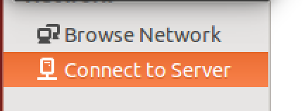

Linux¶
We are using Ubuntu 14.04 as our Linux desktop operating system. On Ubuntu, open Files. There is a Connect to Server option on the left sidebar. Click on that.
Enter the server address and press Connect.

You will be prompted for a username and password. Enter them and press Connect.

Once you have connected, the directory should appear under the Network listing.